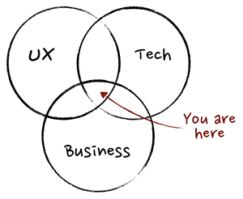

Manager (Менеджер)
Это руководитель или управляющий, отвечающий за определённое направление деятельности предприятия. В IT сфере различают несколько видов профессии менеджеров: менеджер по продукту (Product Manager),менеджер по доставке (Delivery Manager) и менеджер проект (Project Manager).
Задачей ИТ-менеджера является выбор необходимых предприятию средств автоматизации с минимизацией затрат времени и ресурсов на их освоение, настройку и внедрение. В частности, он отвечает за автоматизацию таких областей, как управление сетевым оборудованием, серверами и корпоративными приложениями, хранение и безопасность данных, управление парком персональных компьютеров и службой поддержки.
Нужно уметь решать проблемы, связанные с явными и неявными конфликтами. Неявные конфликты такие: заказчик хочет весь свой проект на вчера и недорого, начальство хочет как можно дольше и больше зарабатывать, а программисты просто хотят, чтобы было интересно, и крутую з/п
Эта должность имеет две основные составляющие - технологическую и социально-руководящую. С одной стороны, необходимо внедрить на предприятии информационную систему, максимально удовлетворяющую запросы пользователей, с другой - объяснить ее структуру и функции, обучить правилам пользования, распределить обязанности и зоны ответственности среди персонала по поддержанию ее работоспособности.
Product Manager
Выполняя свою работу, Product Manager коммуницирует как с командой проекта — CEO, разработчиками, визуальными дизайнерами, UX/UI специалистами, QA, так и с конечными пользователями. На определенном этапе именно взаимодействие с пользователями продукта может составлять более 70% ежедневной работы.
- Выступает СЕО продукта;
- Отвечает за продуктовую стратегию компании;
- Имеет глубокое понимание своего сегмента рынка, потребителей и портфолио;
- Периодически тестирует бизнес-кейсы;
- Принимает на себя риски и управление ими;
- Энтузиаст своего продукта;
- Профессионал в коммуникациях и анализе поведения людей.
Product manager — это человек, который:
Задача Product Manager
Основная задача менеджера по продукту— делать все возможное для постоянного совершенствования продукта на каждой стадии его жизненного цикла
Обязанности Product Manager всегда зависят от компании, в которой он работает. Но и в небольших стартапах, и в крупных технологических компаниях эту должность должны занимать люди, которые разбираются сразу в нескольких областях, чаще всего это технологии, бизнес и дизайн. Так как специального образования в области продакт-менеджмента не существует (хотя Facebook требует от претендентов на эту должность диплома по информатике), известные профессионалы в этой области являются инженерами или, например, экономистами. Кроме того, продакт-менеджеры должны быть коммуникабельны и уметь переключаться с одной задачи на другую.
Из-за специфики профессии приходится много работать с разными людьми — это морально утомляет, из-за чего вне работы общение вообще хочется свести к минимуму
- Общение с заказчиком и его командой, сбор требований, выявление ожиданий и пожеланий;
- Создание user stories, приоритизация беклога продукта, распределение задач;
- Создание feature спецификаций (цели, аналитика, wireframes);
- Взаимодействие с дизайнерами (фидбек по выполненным задачам);
- Создание, обновление и мониторинг дешбордов продукта;
- Создание, обновление и мониторинг дешбордов продукта;
- A/B-тестирование;
- Координация взаимодействия с компаниями, которые исследуют поведение потребителей (UserTesting, Validately, Ask your Target Market и т.д.), затем анализ полученной информации;
- Принятие решений по продукту, основываясь на количественных данных.
Но, можно выделить такие обязанности:
Самым сложным часто оказывается именно первый пункт — коммуницирование с заказчиком. Очень важен поиск баланса между возможностью и реальностью, так как заказчик хочет многого, а его пользователи, зачастую, хотят несколько другого. И ваша задача — донести до заказчика мнение и нужды именно его целевой аудитории/пользователей и получить одобрение на внесение модификаций в реализацию его «возможностей».
- Развиваться горизонтально — каждый новый проект будет приносить новые знания, возможности, а также понимание, что еще следует доучить и в чем разобраться;
- Создать собственный продукт;
- Стать консультантом (Advisor). Это сейчас крайне актуально — хорошие специалисты помогают растить продукт, получая за это equity или почасовую оплату.
Перспективы:
Project Manager
Это специалист, чьей главной задачей является управление проектом в целом: проектирование и расстановка приоритетов, планирование выполнения задач, контроль, коммуникации, а также оперативное решение проблем.
Должность руководителя проекта налагает высокую ответственность на специалиста, т.к. именно он управляет всеми процессами проекта и от него зависит конечный результат работ. Карьерный путь руководителя проекта всегда ведет в топ-менеджмент и в сторону проектов большего бюджета.
Задачи и обязанности
Основная обязанность и ответственность PM — довести идею заказчика до реализации в установленный срок, используя существующие ресурсы. В рамках этой задачи PM’у необходимо построить план разработки, организовать команду, настроить процесс работы над проектом, обеспечить обратную связь между командами и заказчиком, устранять помехи для команд, контролировать качество и поставку продукта в срок.
Задачи PM’а можно классифицировать как тактические и стратегические. Тактические — это решение каждодневных проблем проекта, устранение препятствий с пути команды. Стратегические заключаются в том, чтобы координировать общую цель проекта, путь к ней, а также скорость передвижения.
Хороший PM ценит время, является хорошим аналитиком, психологом, лидером; энергичен, позитивен, не паникует, вместо отговорок ищет пути решения проблем, политкорректен, понимает стратегию и тактику
- ведение проектов (контроль качества, сроков, бюджетов и рисков);
- коммуникации с заказчиком (согласование планов, сроков, требований, бюджетов);
- руководство проектной командой;
- ведение проектной и технической документации;
- участие в процессе продажи и заключении договоров (в том числе участие в тендерах);
- постпроектное ведение заказчиков и дополнительные продажи.
Так же можно выделить следующий ряд задач:
Требования к менеджерам проектов зависят от сферы деятельности компании. На стройке одно нужно, в ИТ — другое, в банковской сфере — третье.
- Высшее образование (желательно по профилю работы компании);
- Опыт работы от 1 года (серьезные должности требуют более 3-х лет);
- Хорошее знание сферы деятельности и ее рынка;
- Умение составлять документацию (техническую и проектную);
- Опыт руководства (в рамках проектных команд);
- Отличные коммуникативные навыки.
- понимание принципов управления проектами (например, PMI)
Но основные требования такие:
Главные качества PM’а — это хорошее знание предметной области бизнеса, лидерские качества, опыт работы с людьми, навыки презентаций и убеждения, умение договариваться и учитывать интересы разных групп людей, способность вежливо и понятно излагать мысли на многих языках, а также умение собирать общую картину по разрозненным фактам. Также необходимы опыт планирования, оценки и устранения рисков, знание гибких и классических процессов разработки и умение выполнять административные задачи и создавать команду. Будет плюсом опыт в разработке или тестировании.
На сегодняшний день специалисты в области ИТ должны помнить о двух составляющих - непосредственно технической и, конечно, управленческой. К сожалению, ИТ-менеджеры часто забывают о влиянии человеческого фактора на решение технических задач.Чего же ожидают исследователи от менеджеров информационных технологий в ближайшем будущем? Специалистам по ИТ предстоит освоить две сравнительно новые роли. Первая - "мастер перемен": лидер в организации, управлении и поддержке изменений в сфере бизнеса. Вторая и наиболее важная роль - "бизнес-стратег": человек, оказывающий непосредственное влияние на стратегию развития предприятия, отвечающий за технологические аспекты электронной коммерции и т.п. Как мы видим, влияние изменений проявилось в появлении новых ролей для менеджера ИТ, и эти роли перешли к нему от общего менеджмента организации.